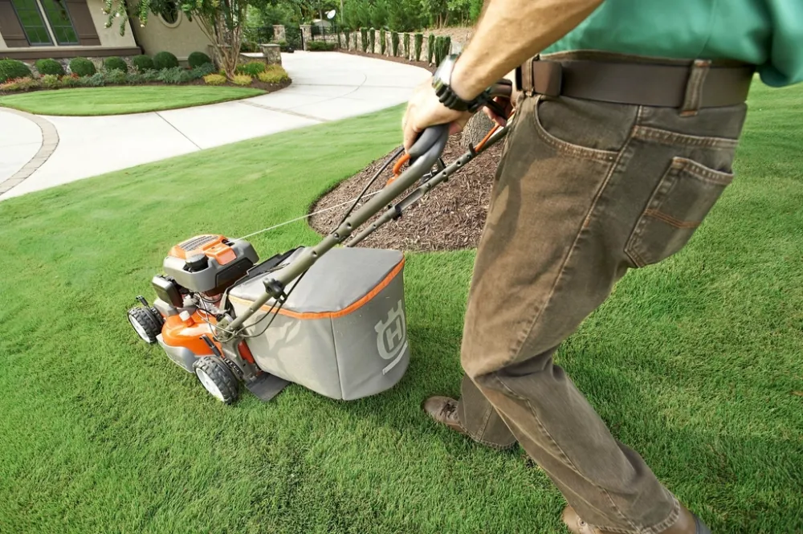

Jardin & Extérieur
Tondeuse qui ne démarre pas, lame émoussée, fil de coupe-bordure épuisé, tuyau percé : un peu d'entretien avant la saison évite la plupart des pannes du jardin.
- 5 fiches vérifiées
- 1 panne diagnostiquée
- 10 types d'équipement

Mon matériel dans ce domaine
GérerQue voulez-vous réparer ?
Tonte
Tondeuse à gazon ou autoportée2 fiches · 37 marques · 1 107 modèles
Robot tondeusePas encore de fiche · 16 marques · 198 modèles
Taille et débroussaillage
Débroussailleuse, coupe-bordure ou cisaille1 fiche · 33 marques · 879 modèles
Taille-haie, tronçonneuse ou élagueusePas encore de fiche · 29 marques · 1 916 modèles
Souffleur, aspirateur ou broyeur de jardinPas encore de fiche · 22 marques · 1 005 modèles
Motobineuse ou motoculteurPas encore de fiche · 16 marques · 242 modèles
Extérieur
Nettoyeur haute pressionPas encore de fiche · 22 marques · 1 752 modèles
Pompe d'arrosage ou de relevagePas encore de fiche · 1 marque · 2 modèles
Barbecue ou planchaPas encore de fiche · 35 marques · 3 365 modèles
Piscine : robot, pompe, filtration, chauffagePas encore de fiche · 35 marques · 1 261 modèles
Types, marques et modèles d'après Spareka, Leroy Merlin.
Avant de commencer
- Avant de toucher une lame : débranchez le câble de bougie, le cordon ou la batterie.
- Portez des gants épais pour manipuler lames et chaînes.
- Faites le plein moteur froid, en extérieur, loin de toute flamme.
- Tronçonneuse, débroussailleuse : gants, lunettes et protection auditive indispensables.
Vous connaissez une réparation qui manque ?Partagez-la : elle aidera les prochains à ne pas jeter.